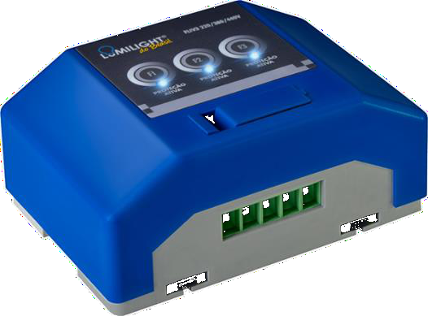

Falhas e desligamentos
Paradas inesperadas, desarmes e ocorrências recorrentes em equipamentos.
Distúrbios na alimentação elétrica podem contribuir para falhas, paradas e desgaste de equipamentos. Existem soluções que vale a pena investigar.
A INOAR pode avaliar a aplicação da tecnologia Lumilight na sua instalação, com uma estimativa preliminar de benefícios e sem compromisso de contratação.

Nem toda falha tem origem na qualidade da energia. Mas, diante desses sintomas, faz sentido investigar as condições elétricas da instalação.
Paradas inesperadas, desarmes e ocorrências recorrentes em equipamentos.
Componentes com vida útil abaixo do esperado e intervenções frequentes.
Oportunidades de analisar perdas, comportamento das cargas e custos associados.
Segundo o fabricante, o filtro capacitivo Lumilight é conectado em paralelo à rede elétrica e atua sobre determinadas interferências e distúrbios elétricos.
O interesse técnico está em verificar se a aplicação é adequada às cargas existentes e se pode contribuir para reduzir problemas operacionais ou custos identificados.
Uma avaliação técnico-comercial preliminar pode indicar possíveis aplicações, equipamentos a considerar e cenários de benefício econômico e operacional, conforme os dados disponíveis.
Esta etapa não envolve instalação experimental. Estimativas são preliminares, dependem dos dados fornecidos e não representam garantia de desempenho ou economia.
Não se deve presumir isso. O equipamento não substitui automaticamente dispositivos de proteção, projetos elétricos ou outras medidas de engenharia. A compatibilidade deve ser avaliada tecnicamente.
A equipe pode estudar o potencial de melhoria a partir dos dados disponíveis. Qualquer estimativa precisa explicitar suas premissas e não deve ser tratada como economia garantida.
Não necessariamente. Ela pode começar a distância, com informações da instalação. Uma visita orçamentária poderá ser proposta conforme a localização, a necessidade e a viabilidade do atendimento.
Paulo Ubiratan realiza a aproximação comercial e encaminha o interesse à equipe especializada da INOAR, responsável pelo aprofundamento técnico e pelos próximos passos.
Se a possibilidade fizer sentido para sua operação, Paulo pode organizar uma conversa com um especialista da INOAR. Sem compromisso de contratação.